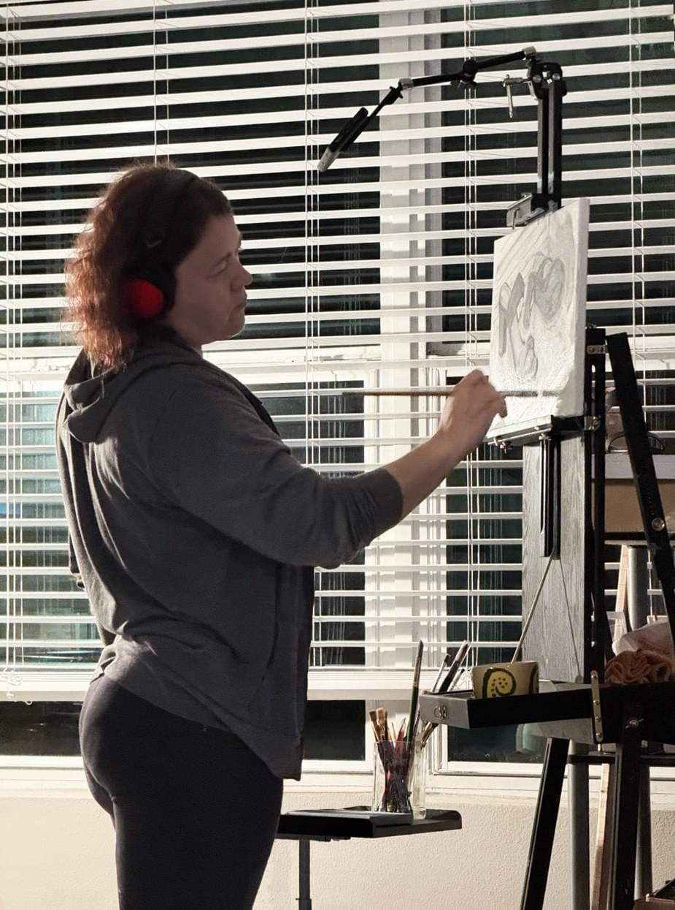

About Katrin Barshe

Hello! My name is Katrin Barshe. I am an artist and designer living in Melbourne, Florida.
I come from Siberia. I have seen the cold winter sea and cities that never sleep, like Rio, Moscow and New Orleans. Through it all, I always return to the ocean. Now I live next to it.
Thank you for stopping by. If my art speaks to you, write to me: katrinbarshe@gmail.com
If you're here for design work, you'll find it at katrindesign.com.